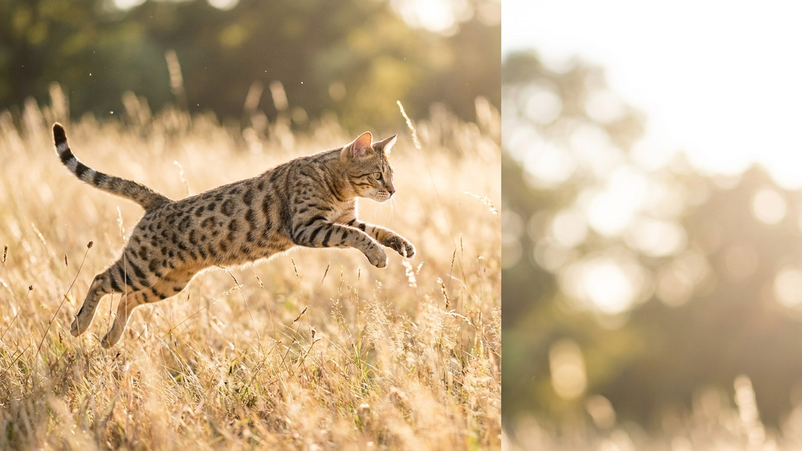

Саванна приносит игрушку хозяину, идёт на шлейке и залезает в душ — не потому что её приучили, а потому что так устроена. Это гибрид домашней кошки и сервала, и разница с обычной кошкой ощущается с первого дня. Ниже — характер, уровень энергии и то, что надо обустроить в квартире, чтобы обоим было комфортно.
🐾 Спросите AI-ветеринара прямо сейчас
AnimaLife — приложение, где AI-ветеринар отвечает на вопросы о кошке или собаке 24/7. Бесплатно, без записи и очередей.
Порода саванна — прямой гибрид домашней кошки и африканского сервала. Кошки категории F1–F2 (первые поколения от сервала) вырастают до 8–11 кг при росте в холке до 40 см — это заметно крупнее любой обычной породы. Даже F4–F5, которые чаще встречаются в питомниках, превосходят по размеру мейн-куна.
Главное отличие саванны — не размер, а уровень активности. Это кошка с инстинктами дикого охотника: она не лежит весь день на диване, она исследует, прыгает, контролирует территорию и требует занятости.
Владельцы саванны регулярно описывают её поведение как «собачье» — и это не преувеличение:
При этом саванна — не ластящаяся кошка. Она контактна, но на своих условиях: выбирает момент сама и не терпит навязчивых объятий.
Чтобы саванна не переключилась на мебель и шторы, среда должна соответствовать её физике:
Саванна — порода не для всех, и дело не в сложности характера, а в честном уровне вовлечённости. Несколько вещей, которые стоит знать заранее:
Если вы готовы к ежедневной вовлечённости, высоким полкам и кошке, которая встретит вас у двери и пойдёт следом на кухню — саванна станет одним из самых интересных питомцев, которые только бывают.
🐾 Дневник здоровья питомца — в кармане
Вес, прививки, симптомы и напоминания в одном приложении. AnimaLife следит за здоровьем питомца вместо вас.
🐾 Понравился разбор?
Подпишитесь на канал — каждый день разбираем по одному тревожному симптому у кошек и собак: что в пределах нормы, а когда пора к врачу. Подпишитесь, чтобы не пропустить разбор, который может спасти здоровье вашего питомца.
Материал носит информационный характер и не заменяет очную консультацию ветеринара.